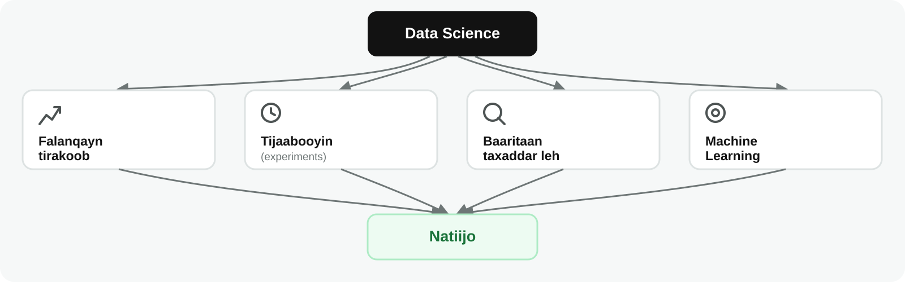
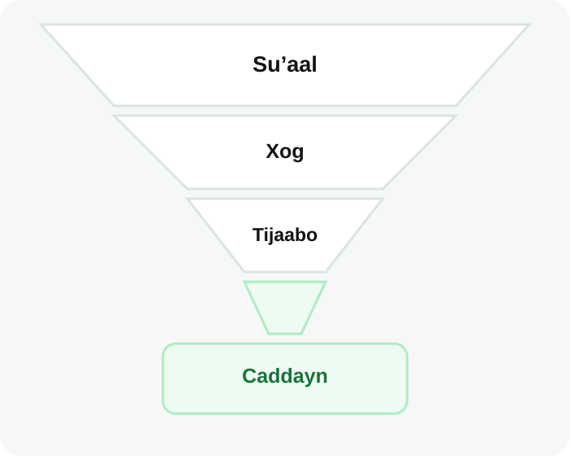

Data Science
Waxaad awoodi doontaa inaad sharaxdo waxa Data Science qabto, natiijooyinka uu soo saari karo, iyo sababta aanu mar walba ugu baahnayn Machine Learning.
Dulmar
Shirkad isgaarsiineed ayaa aragtay in kumannaan macaamiil ahi joojiyeen cusboonaysiinta xirmooyinkooda billaha ah. Diiwaannadu waxay muujinayaan waxa dhacay, laakiin shirkaddu waxay u baahan tahay inay fahanto sida dhibaatadu u dhacday, tijaabiso sababaha suurtagalka ah, oo goʼaamiso caddaynta taageeri karta xal.
Data Science wuxuu waxtar u leeyahay dhibaato noocan ah oo aan jawaabteedu markiiba caddayn.
Waa maxay Data Science?
Data Science wuxuu isku daraa tirakoob (statistics), barnaamij-samaynta (programming), aqoonta goobta (domain knowledge), iyo falanqaynta xogta si xogta looga helo faham muhiim ah loona dhiso xalal xog ku salaysan.
Qayb walba waxay keentaa wax gaar ah:
Fahamka ganacsiga iyo fahamka tirooyinku si isku mid ah ayay muhiim u yihiin. Qaab (pattern) ka dhex muuqda mobile data macne badan ma leh haddii qofka baaraya aanu fahmin xirmooyinka, qiimahooda, ama hab-dhaqanka macaamiisha.
Waxa uu Qabto Data Scientist-ku
Data Scientist-yadu waxay badanaa ka shaqeeyaan dhibaatooyin ay ka mid yihiin:
Shaqadu badanaa waxay ka bilaabataa suʼaal, kama bilaabato model. Data Scientist-ku wuxuu goʼaamiyaa caddaynta loo baahan yahay, hubiyaa in xog ku habboon la hayo, doortaa habka saxda ah, tijaabiyaa natiijada, kadibna sharxaa xaddidaadaha jira.
Mashruuc Kasta oo Data Science ah uma Baahna Machine Learning
Data Science wuxuu isticmaali karaa Machine Learning, laakiin wuxuu sidoo kale adeegsan karaa falanqayn tirakoob, tijaabooyin, ama baaritaan taxaddar leh.

Ka soo qaad in shirkadda isgaarsiintu ay qiimaha xirmooyinka ka beddeshay saddex magaalo xilliyo kala duwan. Data Scientist-ku wuxuu isbarbar dhigi karaa heerka cusboonaysiinta xirmooyinka ka hor iyo ka dib isbeddel kasta, wuxuu baari karaa sababo, wuxuuna hubin karaa in caddayntu muujinayso xiriir. Shaqadaasi waa Data Science xitaa haddii aan la dhisin model Machine Learning ah.
Natiijadu waxay noqon kartaa sharaxaad, tijaabo, saadaal, talo-bixin, ama model. Machine Learning waa hal hab oo la isticmaali karo, laakiin ma aha waxa qeexaya Data Science.
Tusaale
Si loo baaro hoos u dhaca cusboonaysiinta xirmooyinka, Data Scientist-ku wuxuu:
- Weedha “macaamiishu way baxooyaan” u beddeli karaa suʼaal la cabbiri karo
- Isku dari karaa xogta cusboonaysiinta, qiimaha, iyo adeegga macaamiisha
- Raadin karaa goorta iyo halka hoos u dhacu ka bilowday
- Tijaabin karaa waxa sida ugu fiican u sharxaya hoos u dhaca: qiimaha, tayada adeegga, ama arrin kale
- Soo bandhigi karaa caddaynta, hubanti laʼaanta, iyo tallaabooyinka la qaadi karo

Haddii shirkaddu markii dambe doonto inay ogaato macaamiisha gaarka ah ee laga yaabo inay baxaan bisha soo socota, dhibaatadu way is beddeshay. Hadda waxay u baahan tahay saadaal. Halkaas ayaa Machine Learning loogu dari karaa mashruuca.